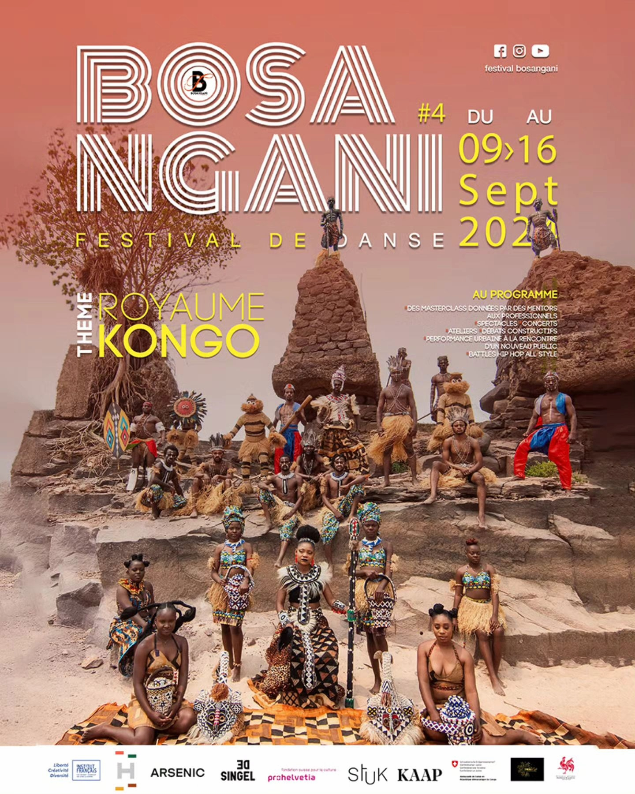

Bosangani Festival
Après sa troisième édition réussie, et celle de confirmation qui s'est ténue l'année passée, il est impérieux pour la structure AUC production de garder le rythme et de travailler à la mise en place de la quatrième édition de ce festival, qui vient combler un vide criant dans le domaine de la danse à Kinshasa.
read more
